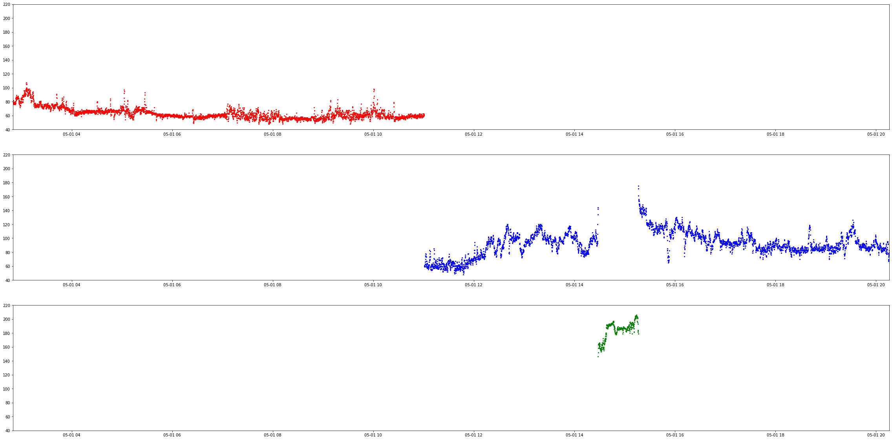

KNN heart rate prediction
Uses KNN to detect if the user is working out, running, or at rest. The data is a day fo heart rate data from me. The Data was pulled from the WHOOP unoffical API. The model was very simple to implemet for this, most of the work came in the data cleaning. The data came unlabeled, with diffrent time zone, with diffrent time formats. There was a list of workouts and recored sleeps (with diffrent time zones) that I was able to use to map the heart rate data to thie corresponding labels. What you see below if the gragh for the 3 labeled data sets, graphed over time. The red is sleeping, Green is active, and the blue is during a workout. The model does not take time into account, as this would work too well (gotta give yourself a little bit of a challenge).
